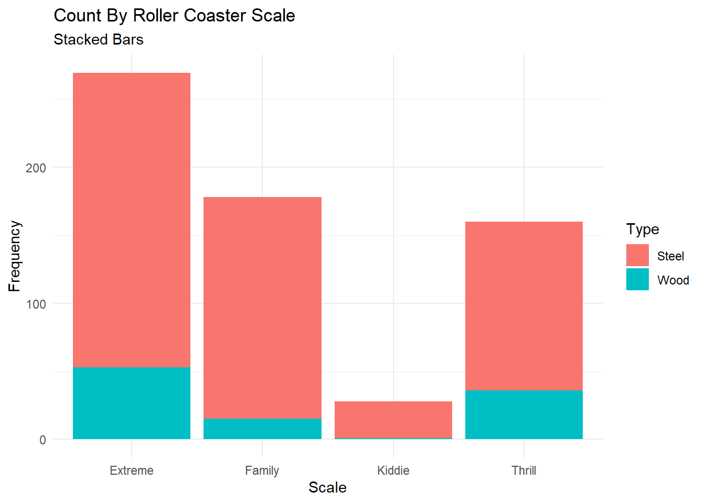
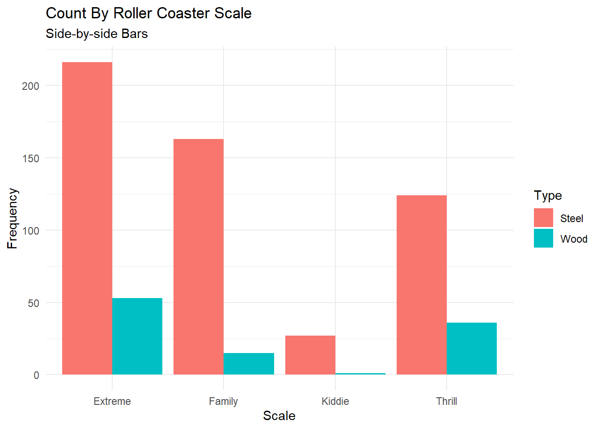
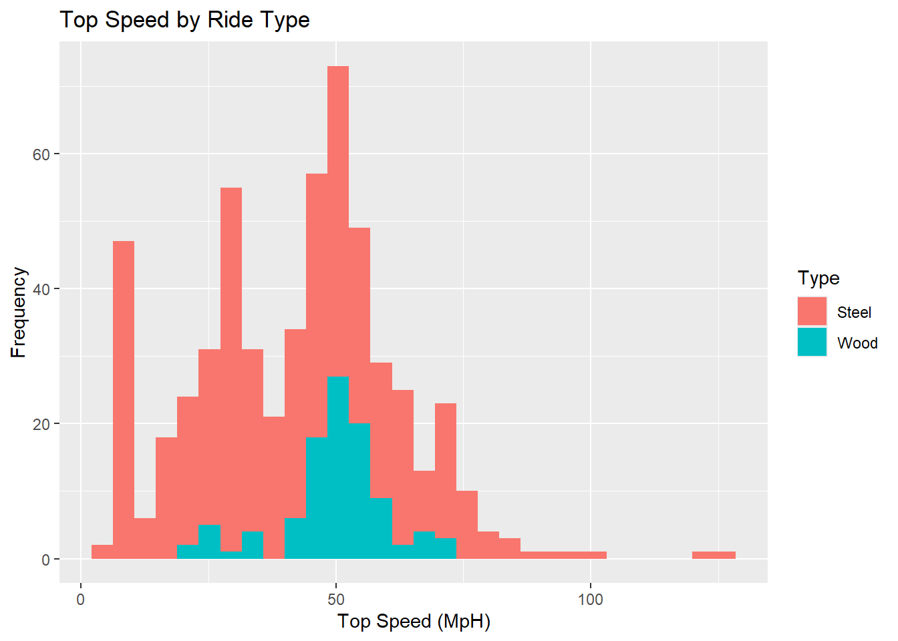
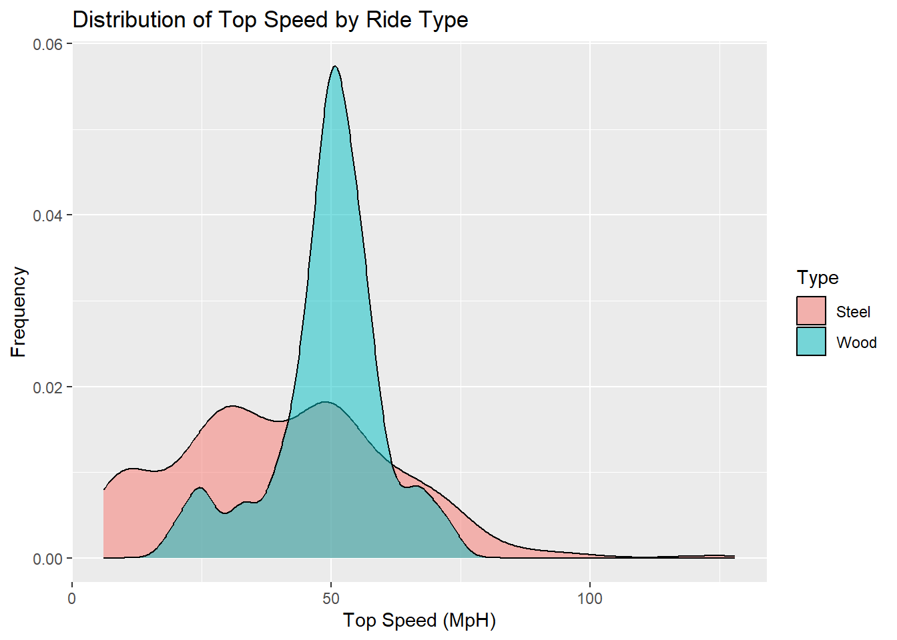
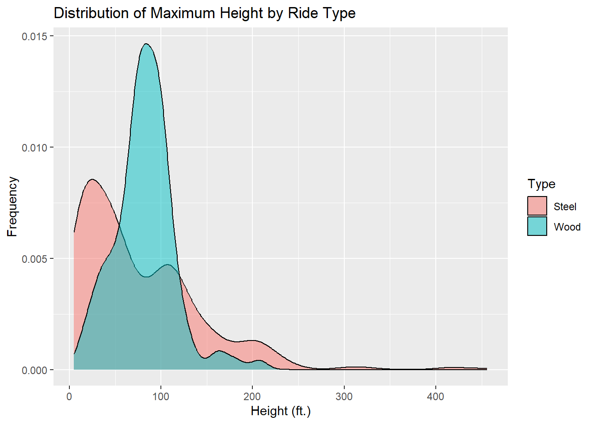
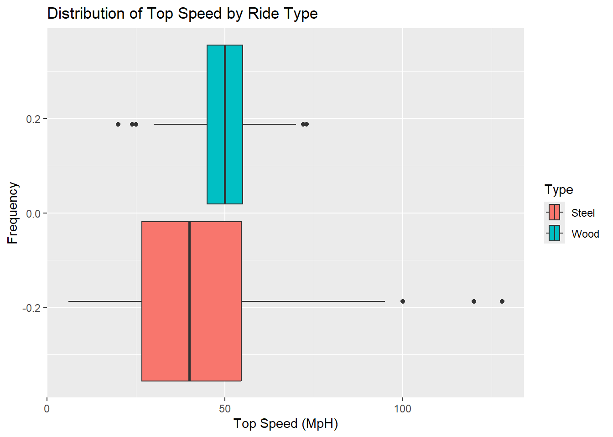
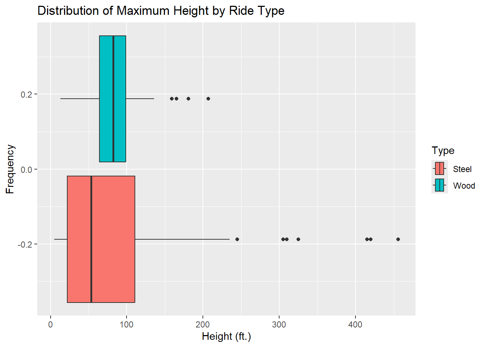
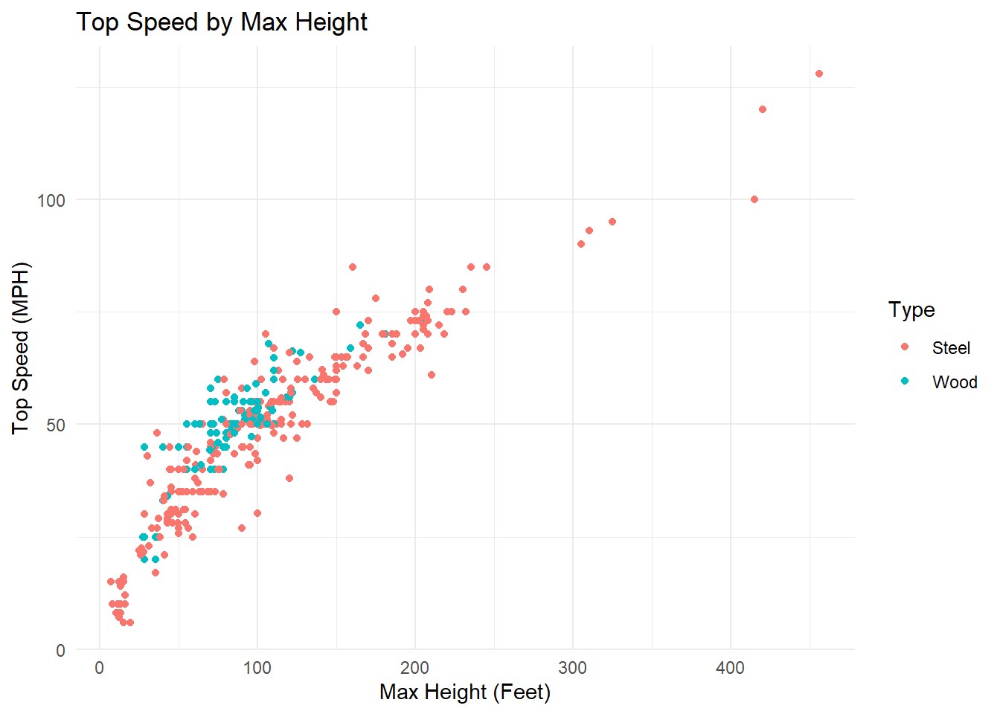
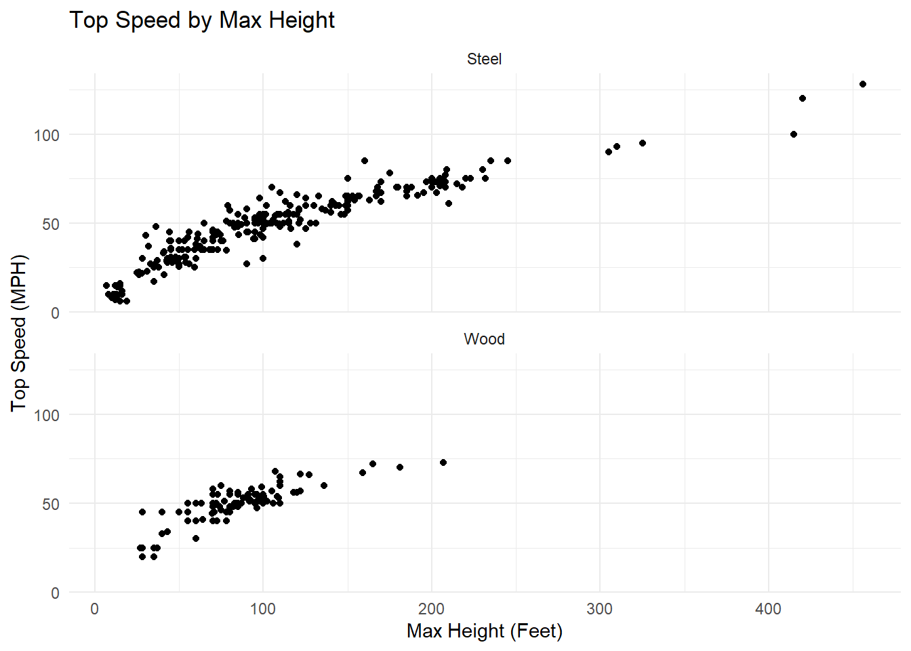
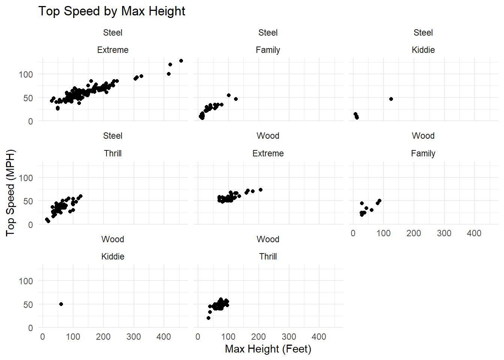

Warning: package 'httr' was built under R version 4.5.3
library(jsonlite)
Warning: package 'jsonlite' was built under R version 4.5.3
# API callnews_return <-GET("https://newsapi.org/v2/everything?q=Iran&from=2026-05-13&language=en&pageSize=50&apiKey=d41f8e9cca0f4687b4865289b712e088")str(news_return)
We’ve got the data, but most of this looks like metadata we aren’t interested in. The articles are stored in the content object. We need to parse the raw data using the jsonlite package:
# A tibble: 635 × 18
Coaster Park City State Census.Region Year.Opened AgeGroup TopSpeed
<chr> <chr> <chr> <chr> <fct> <int> <fct> <dbl>
1 Adrenaline Peak Oaks… Port… Oreg… West 2018 3:Newest 45
2 Adventure Expr… King… Mason Ohio Midwest 1991 2:Recent 35
3 Afterburn Caro… Char… Nort… South 1999 2:Recent 62
4 Aftershock Silv… Athol Idaho West 2008 3:Newest 65.6
5 Air Grover Busc… Tampa Flor… South 2010 3:Newest 22
6 Alpengeist Busc… Will… Virg… South 1997 2:Recent 67
7 Alpine Bobsled Grea… Quee… New … Northeast 1998 2:Recent 35
8 American Eagle Six … Gurn… Illi… Midwest 1981 2:Recent 66
9 American Thund… Six … Eure… Miss… Midwest 2008 3:Newest 48
10 Anaconda King… Dosw… Virg… South 1991 2:Recent 50
# ℹ 625 more rows
# ℹ 10 more variables: MaxHeight <dbl>, Scale <fct>, Type <fct>, Design <fct>,
# Drop <dbl>, Length <dbl>, Duration <int>, Inversions <fct>,
# Num.Inversions <int>, Make <chr>
Beautiful! Now that our data is clean, we should see if there are any missing values to note. I’m finding the proportion of missing values so that we can get a better idea of the missingness:
Drop TopSpeed Duration Length MaxHeight
0.202 0.117 0.104 0.052 0.013
Coaster Park City State Census.Region
0.000 0.000 0.000 0.000 0.000
Year.Opened AgeGroup Scale Type Design
0.000 0.000 0.000 0.000 0.000
Inversions Num.Inversions Make
0.000 0.000 0.000
Checking out the output, we can see that the Drop, TopSpeed, Duration, and Length variables have the greatest share of missing values. Respectively, they have missingness 20%, %12, %10, and %5.
Exploring Categorical Variables:
Contingency Tables with table()
Let’s check out the relationship between the age group and scale of rides using contingency tables:
table(rcs$AgeGroup)
1:Older 2:Recent 3:Newest
69 190 376
Most of the rides in the dataset are new or recent, with only a few old rides. Let’s see if the breakdown changes if we add the ride scale to our table.
There are very few kiddie rides in the data set. Most of the new and recent rides happen to be extreme or family. The older rides in the data set are mostly thrill rides.
I wonder if the material of the ride (steel/wood) makes a difference. We can make this a three way table to investigate:
It seems that most new rides are made of steel. There are very few wooden kiddie coasters in the data set.
Interpreting a Value: The value “1” in the “Wood” level of the three way table implies that there’s one observation of an older wooden kiddie coaster in the data set.
Conditional Tables
We can remake the previous table by filtering our data and then making a two way table:
# way one - subsetting the datawood_rcs <-filter(rcs, Type =="Wood")table(wood_rcs$AgeGroup, wood_rcs$Scale)
Depending on how we’re plotting data, this form might be useful.
Stacked and Side-by-side Bar Graphs
Stacked plots are the default option, so we just use geom_bar()
library(ggplot2)stacked_bar <-ggplot(rcs, aes(x = Scale, fill = Type)) +geom_bar() +labs(title ="Count By Roller Coaster Scale",subtitle ="Stacked Bars",y ="Frequency") +theme_minimal()stacked_bar

Again, we can see that the vast majority of roller coasters in the data set are made of steel. Interestingly, most of the wooden rides are extreme or thrilling, with relatively few being family/kid oriented.
If we want the bars for Type to be adjacent instead of stacked, we just have to specify the position argument:
library(ggplot2)sbs_bar <-ggplot(rcs, aes(x = Scale, fill = Type)) +geom_bar(position ="dodge") +labs(title ="Count By Roller Coaster Scale",subtitle ="Side-by-side Bars",y ="Frequency") +theme_minimal()sbs_bar

I think this graph better shows the proportion of extreme/thrill wooden roller coasters.
Exploring Numeric Variables
Center + Spread for two variables
Now, we’re looking at the mean and standard deviation for TopSpeed and MaxHeight:
cntr_sprd_tbl <- rcs |>select(TopSpeed, MaxHeight) |>drop_na() |># drop missing due to high missingness for TopSpeedsummarize(across(everything(),list(mean = mean, sd = sd)))cntr_sprd_tbl
The average ride in our dataset has a top speed of 42 mph and a max height of 84 feet. We’d expect the steel coasters to have higher mean speed and height. We can subset to only include steel coasters:
cntr_sprd_tbl_steel <- rcs |>filter(Type =="Steel") |>select(TopSpeed, MaxHeight) |>drop_na() |># drop missing due to high missingness for TopSpeedsummarize(across(everything(),list(mean = mean, sd = sd)))cntr_sprd_tbl_steel
Interestingly, we see a slightly lower mean top speed and similar mean max height for the steel coasters in the dataset. We may attribute this to the larger number of steel family coasters lowering the average.
Center + Spread for two variables + Grouping
cntr_sprd_1grp <- rcs |>select(Type, TopSpeed, MaxHeight) |>group_by(Type) |>drop_na() |># drop missing due to high missingness for TopSpeedsummarize(across(everything(),list(mean = mean, sd = sd)))cntr_sprd_1grp
Directly comparing the stats for each material type, we see that the variability in speed and height is greater for steel coasters. This supports our hypothesis that the family coasters drag down the average speed/height stats.
Finally, we’ll examine how the scale of the ride affects the average speed/height:
cntr_sprd_2grp <- rcs |>select(Type, Scale, TopSpeed, MaxHeight) |>group_by(Type, Scale) |>drop_na() |># drop missing due to high missingness for TopSpeedsummarize(across(everything(),list(mean = mean, sd = sd)))
`summarise()` has grouped output by 'Type'. You can override using the
`.groups` argument.
As we saw previously, there isn’t enough data to estimate the height and speed of the wooden kiddie coasters. We can see that the average speed for extreme coasters is similar for both material types, but the extreme steel coasters have greater standard deviation. The Q3 top speed values for wood and steel coasters likely differ more than the means would suggest.
Next, we use the correlations above to determine the degree and shape of relationships between variables. Intuitively, the correlation is highest between the Drop and MaxHeight variables. High positive correlation also exists between the following pairs: (TopSpeed, MaxHeight), (TopSpeed, Drop), (TopSpeed, Length)
`stat_bin()` using `bins = 30`. Pick better value with `binwidth`.

The histogram for top speed clearly shows that wooden coasters have less variability in speed compared to steel ones. There are several peaks for steel coasters, likely suggesting that we should consider the interaction between scale and type.
max_hgt_hist
`stat_bin()` using `bins = 30`. Pick better value with `binwidth`.
The distribution of heights for steel coasters is very right skewed, with a long right tail indicating a small number of very tall steel roller coasters. The distribution of heights for wooden coasters is narrower and less skewed.
Density Plots
top_spd_density <-ggplot(rcs |>select(Type, TopSpeed) |>drop_na(), aes(x = TopSpeed, fill = Type)) +geom_density(alpha =0.5) +labs(title ="Distribution of Top Speed by Ride Type",x ="Top Speed (MpH)",y ="Frequency")max_hgt_density <-ggplot(rcs |>select(Type, MaxHeight) |>drop_na(), aes(x = MaxHeight, fill = Type)) +geom_density(alpha =0.5) +labs(title ="Distribution of Maximum Height by Ride Type",x ="Height (ft.)",y ="Frequency")top_spd_density

The density plots for top speed reflect the variability in speed for steel coasters. Conversely, the tall peak and narrower tails of the wooden coaster speed distribution reflect lesser variety in coaster types.
max_hgt_density

Examining the height density plots, we again see the more concentrated height distribution for wooden coasters. Steel coasters have a bimodal height distribution, likely due to the inclusion of many kiddie/family themed rides.
Box Plots
top_spd_box <-ggplot(rcs |>select(Type, TopSpeed) |>drop_na(), aes(x = TopSpeed, fill = Type)) +geom_boxplot() +labs(title ="Distribution of Top Speed by Ride Type",x ="Top Speed (MpH)",y ="Frequency")max_hgt_box <-ggplot(rcs |>select(Type, MaxHeight) |>drop_na(), aes(x = MaxHeight, fill = Type)) +geom_boxplot() +labs(title ="Distribution of Maximum Height by Ride Type",x ="Height (ft.)",y ="Frequency")top_spd_box

max_hgt_box

While boxplots also reflect the greater variability in max height and top speed for steel coasters, they also prominently display the outliers and weight of the tails (while masking multimodality). The width of Q3 and Q4 for steel coasters indicates there are many tall steel roller coasters in the data set despite the low average speed.
Scatterplots
topspd_maxhgt <-ggplot(rcs |>drop_na(), aes(x = MaxHeight, y = TopSpeed, color = Type)) +geom_point() +labs(title ="Top Speed by Max Height",x ="Max Height (Feet)",y ="Top Speed (MPH)") +theme_minimal()topspd_maxhgt

We can use a scatter plot to view the shape of the relationship between variables. If we wanted to model the top speed of a roller coaster as a function of it’s height, it seems like we should use some third degree model to account for the cubic-shaped relationship between height and speed.
Faceting:
topspd_maxhgt_1fct <-ggplot(rcs |>drop_na(), aes(x = MaxHeight, y = TopSpeed)) +geom_point() +labs(title ="Top Speed by Max Height",x ="Max Height (Feet)",y ="Top Speed (MPH)") +facet_wrap(~Type, nrow =2) +theme_minimal()topspd_maxhgt_1fct

For both types of roller coasters, we can see a kink/bend around the 100 feet mark where the relationship between speed and height starts to diminish. I’d guess this is due to air resistance starting to matter around those speeds.
topspd_maxhgt_2fct <-ggplot(rcs |>drop_na(), aes(x = MaxHeight, y = TopSpeed)) +geom_point() +labs(title ="Top Speed by Max Height",x ="Max Height (Feet)",y ="Top Speed (MPH)") +facet_wrap(vars(Type, Scale)) +theme_minimal()topspd_maxhgt_2fct

Faceting isn’t a great choice for viewing these plots, but if we had more data it could be useful.